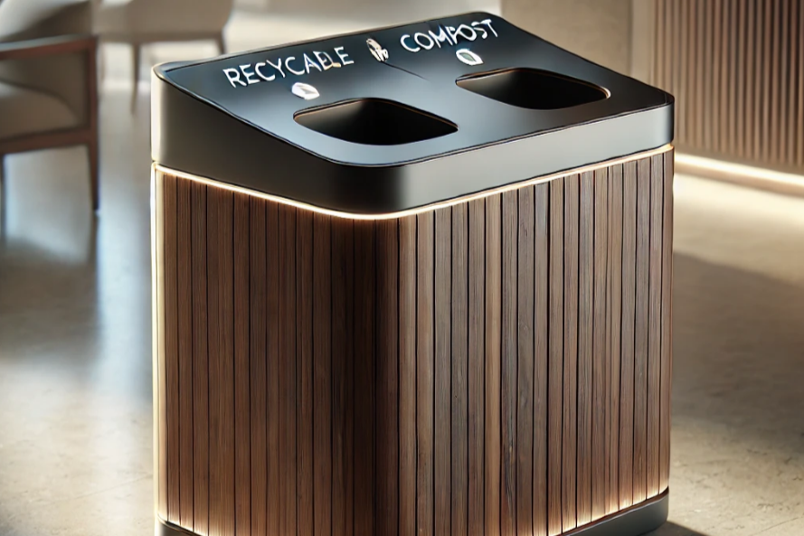
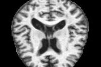

Welcome to Wina's Portfolio
Unlocking insights through machine learning, data science, and intelligent automation.
Explore Projects
Featured Focus: Agentic AI Development
Architecting intelligent autonomous agents that revolutionize business operations. Specializing in enterprise-grade AI solutions for finance, HR, supply chain, and procurement.
Explore Agentic AI Projects

This project explores the use of Convolutional Neural Networks (CNNs) for waste classification, comparing the performance of DenseNet121, ResNet50v2, MobileNetv2, and VGG16 models. The aim is to identify the most efficient model for accurate waste segregation, contributing to environmental sustainability through advanced AI technology.

This project leverages the DenseNet121 model to classify Alzheimer's disease from MRI scans with an impressive accuracy of 99.2%. The model has been deployed as a user-friendly Streamlit app, allowing users to easily detect and classify Alzheimer's disease, showcasing the potential of AI in healthcare diagnostics.

This Project aimed to reduce the misdiagnosis of psychiatric disorders by leveraging machine learning algorithms on EEG data. Misdiagnosis in psychiatry can lead to ineffective treatment plans and prolonged patient suffering. By utilizing EEG data, which captures electrical activity in the brain, this project sought to identify patterns that could differentiate between various psychiatric disorders more accurately.

This project focuses on the analysis of gene expression data to distinguish between Acute Myeloid Leukemia (AML) and Acute Lymphoblastic Leukemia (ALL). Accurate classification and clustering of gene expression profiles can provide significant insights into the molecular mechanisms of these cancers and aid in developing targeted therapies.